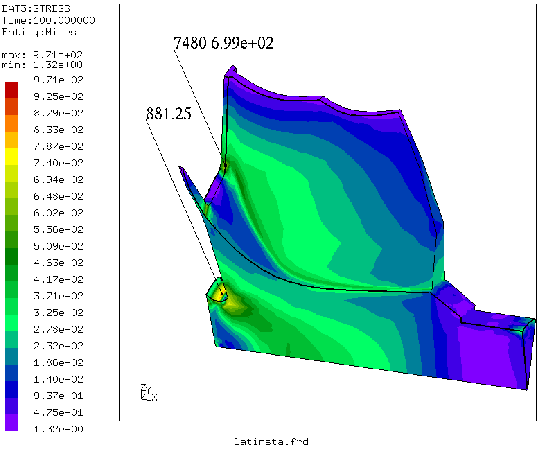

Next: quit Up: Commands Previous: qsur Contents
'qtxt' RETURN 'g'|'a'|'i'|'b'|'p'|'m'|'n'|'v'|'f'|'d'|'s'|'q'This keyword is used to move node-attached texts (showing node-number and value, see figure 8) at certain positions in the drawing area or to manipulate them otherwhise. They are created with the key “g” while the mouse-pointer is over the node to which it should be attached. Attention: They are only visible after the command ”plus nt all” was used (but they are immediatelly visible when the the commands ”qenq” or ”qadd” were used instead of “qtxt”). To move a text pick it at the lower-left corner with the key 'p' and place it with the key 'm' in the new location. To move it back to its node use 'b'. Delete them with 'd'. The node-nr and the value in the text can be switched on and off with the 'n' and 'v' key. The 'f' key will toggle the format of the value between “int”, “float” and “exponent”. See the command ”font” on how to change the font-size. See “txt” for the batch mode command. Texts attached with “txt” can be switched on and off with the 't' key and placed at a leading or trailing position with the 's' key.
To catch more than one entity with one stroke, type 'a' (all) before and create a rectangular picking area by pressing two times the 'r' key. Both strokes define opposite corners of the rectangle. To catch only the entity which is closest to the user type 'i' before.
|  |